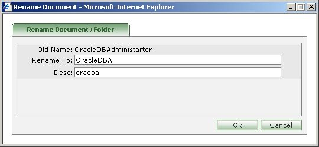

| How to Rename the Folder(s)/Document(s)?
|
- For tree navigation,you can rename only folder(s) in "resume" and "timesheet",whereas both folder(s) and document(s) in "my docs".
- For flat navigation, only document(s) in "my docs" can be renamed.
- For flat navigation, folder(s) can be renamed using "drawer" module.
- Irrespective of the navigation types, you can rename resumes and time sheets only by editing them.
- You can rename folder(s) in "resume" and "timesheet" using the 'Rename' icon [ ].
- You can rename both folder(s) and document(s) in "my docs" using the 'Rename' icon [ ].
|

|
- Old name, Current name(Rename To), Description are displayed for each selection.
- Enter the name to which you would like to rename.
- Enter new description for the same(optional).By default, the original description is displayed(if any).
- Press 'Ok' to bring into effect the names and descriptions you have changed.
- Press 'Cancel' to abort renaming.
|